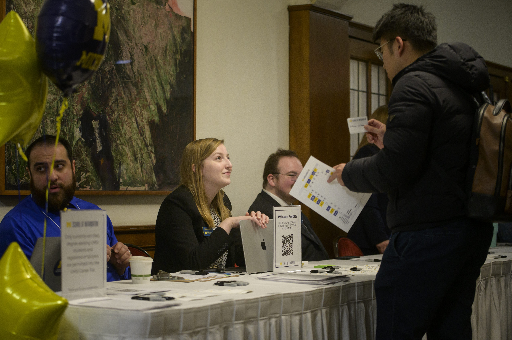
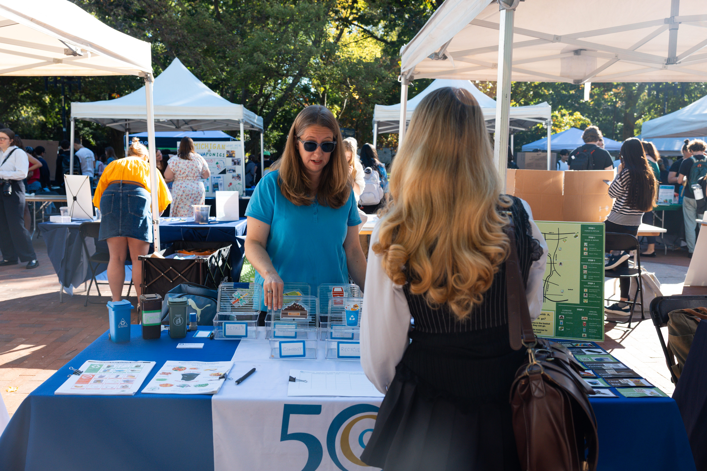

Your Central Hub for Career Success at UMSI
Ready to take the next step toward your future career? The UMSI Career Development Resource Hub is your one-stop shop for trusted guidance, practical tools, and the latest information to help you thrive as a student and job-seeker. Whether you are just starting your exploration or getting ready to launch your career, you will find everything you need, organized for you.
Why Use This Resource?
- Everything in One Place: Stop searching endlessly—quickly access the resources you need for resumes, interviews, networking, mentorship, and more.
- Student-Focused Navigation: Browse by topic or question. Key areas are highlighted so you can get moving right away.
- Guidance Backed by Experts: All resources are recommended and reviewed by the UMSI Career Development Office, so you can trust the advice and materials you find here.
- Always Accessible: Visit the site anytime, from any device. We’re committed to meeting the accessibility needs of all students.
- Modern Support, UMSI Excellence: We benchmark against top peer institutions and integrate UMSI’s unique support, showcasing our commitment to your success.
Start Here

Connect with the UMSI Career Development Office


The UMSI Career Development Office (CDO) offers personalized support through appointments, events, and resource guides. Visit the CDO website or find us on campus to learn more, schedule a coaching session, or just say hello.